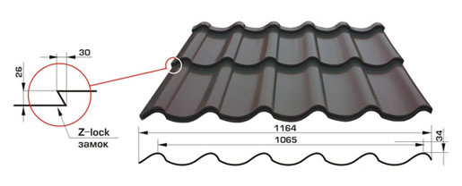
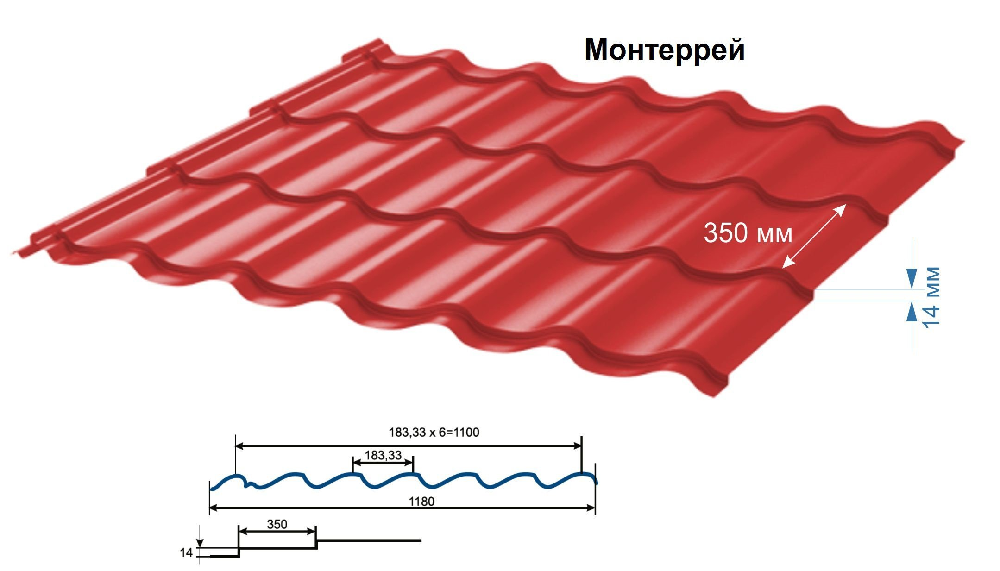

С начала 90-х годов в нашу страну начали завозить профилированные листы с полимерным покрытием из других стран. Одной из популярных моделей была металлочерепица «Монтеррей», которая сегодня уже производится многими предприятиями на территории Украины.
Название данного типа кровельного материала — это на самом деле название типа профиля, а раскраски и вид полимера для покрытия могут отличаться в зависимости от завода-производителя.
Кем бы ни производился профиль «Монтеррей», он имеет стандартную форму волны. Листы из оцинкованной стали гнутся на импортном оборудовании с расстоянием между верхним пиком волны в 183,3 мм с небольшим смещением вправо, если лист лежит лицевой частью вверх.
Стандартная ширин листа составляет 1180 мм, а длина его нарезается под заказ, чтобы получилось выполнить монтаж без обрезки листов, ведь их кромка также защищена полимерным покрытием, а в месте по линии разреза листа его не будет. Высота листов в 2,5 см не несёт большой ветровой нагрузки.
Укрытая листами «Монтерей» кровля не подвержена ржавчине или перегреву на солнце, благодаря своему полимерному покрытию.
Дополнительные преимущества металлочерепицы «Монтеррей»
Вес металлочерепицы в среднем в 10 раз ниже по сравнению с натуральной керамической черепицей — вам не придётся тратить деньги на укреплённые несущие конструкции и деревянный каркас скатной кровли.
Монтаж данного популярного профиля выполняется более быстрыми темпами, и образуется меньше стыков, через которые на чердак попадает вода. Полимерное покрытие такого материала не будет служить в качестве субстрата для образования грибка или лишайника, как это с годами происходит с её натуральным аналогом.
Кровельный профиль «Монтерей» изготовлен из оцинкованной стали, укрытой с обеих сторон слоем пассивации, что замедляет процесс образования ржавчины. Поверх такого слоя с внутренней стороны нанесена защитная краска, а с внешней — грунтовка с полимерным покрытием. С лицевой стороны полимерное покрытие из ПВХ может иметь почти любой оттенок: красный, синий, зелёный, серый, коричневый и т. д.
Недавно на украинском рынке кровельных покрытий появилась новая металлочерепица, имеющая скрытое крепление Z-Lock. Это разработка финской компании Samesor, производящей оборудование, обрабатывающее тонколистовую сталь, которая в конце 70-х первой разработала технологию изготовления металлочерепицы.
35 лет своего существования компания Samesor следила за тенденциями в области архитектуры и строительства и активно занималась разработками новых изделий и технологий. Металлочерепицу Z-Lock называют инновационным кровельным материалом. Почему?
У металлочерепицы есть слабые места – это места креплений черепицы. Рано или поздно туда попадет вода и тогда не избежать коррозии. С Z-Lock эта проблема решается так, что производитель гарантирует 20 лет безукоризненной эксплуатации и при этом обещает, что реальный срок службы металлочерепицы Z-Lock в два – три раза дольше.
Во время монтажа металлочерепицы Z-Lock выступ каждого листа попадает в паз предыдущего. Такое соединение напоминает букву Z, отсюда и название Z-замок. И в конечном итоге, это значительно улучшает внешний вид кровли, придавая ей большую элегантность и аккуратность.
Дополнительные преимущества металлочерепицы Z-Lock
Запатентованная замковая система Z-Lock облегчает процесс крепления листов на обрешетке. Скрытый крепеж делает ненужным большое количество (8 на/кв. м) специальных саморезов с герметичной прокладкой и окрашенных под цвет черепицы.
3D – нарезка и точные геометрические размеры металлочерепицы оставляют вертикальные стыки совершенно незаметными. 3D – резка осуществляется по профилю ступеньки черепицы, что делает места состыковки визуально цельными.
Проблема набегания длины при монтаже внахлест 4-х черепиц устраняется благодаря дизайну элемента. Вводная кромка оснащается при помощи входного ребра разного размера или может быть просто сглаженной без входного ребра. И последнее, то, что остаточный «хвост» сведен к минимуму, что значительно экономит материал во время вертикального монтажа внахлест.
Изготовливаем металлочерепицу под заказ — любой длины и цвета.
Ассортимент профилей настолько велик, что каждый сможет подобрать тот, который будет эффектно смотреться на крыше того или иного строения.
Изготавливается металлочерепица методом штамповки из рулонной оцинкованной стали, которая обладает полимерным покрытием. Если вы желаете приобрести качественную кровлю, то при покупке металлочерепицы обращайте внимание на:
— толщину защитного слоя;
— толщину листа;
— разновидность и цвет покрытия;
— наличие гарантии;
— качество профилирования.
 